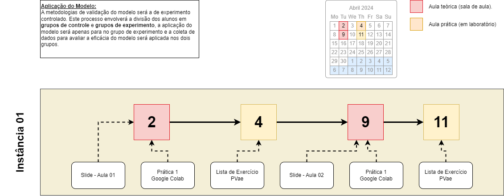

O estudo proposto tem como objetivo principal aplicar e avaliar uma metodologia inovadora para apoio ao ensino de programação no nível superior com ênfase em competências do Pensamento Computacional (PC). Nesse caso, o foco do estudo são cursos não-computação que possuem disciplinas de programação, assim, foi escolhida a disciplina de Introdução à Ciência da Computação (ICC) lecionada pela Unidade Acadêmica de Sistema e Computação (UASC), e que é destinada a estudantes de cursos não relacionados à computação, como Física e diferentes Engenharias. Para alcançar este objetivo, o experimento se propõe a analisar metodologias previamente aplicadas no ensino superior, a fim de identificar abordagens eficazes para a disciplina em questão. Além disso, pretende-se extrair possibilidades e adaptar estratégias existentes.
Os participantes receberão a aplicação da metodologia instanciada desenvolvida para a disciplina de ICC. Esta metodologia incluirá abordagens específicas para promover o ensino de programação com foco em desenvolver as habilidades do PC, adaptadas para estudantes não pertencentes à área de computação. Durante as aulas, os participantes terão a oportunidade de se envolver em atividades práticas e uso de ferramentas tecnológicas para o desenvolvimento de habilidades de programação e resolução de problemas.
O diagrama foi construído para representar todas as etapas e passos necessários para a implementação do experimento. Nele é possível identificar os dias de aulas teóricas e práticas, além do material que será utilizado. Veja Figura abaixo
 Fonte: Desenvolvida pelo autor.